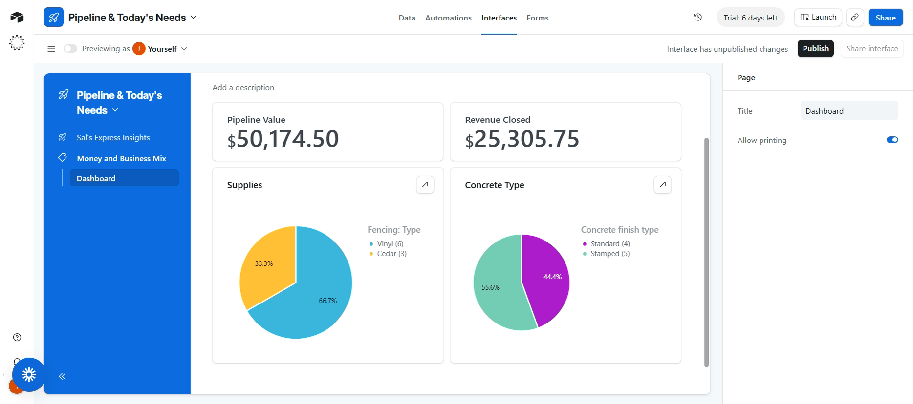

Solutions for Sal
A practice engagement showing the full range of what automation can do for a small business — from generating estimates to giving the owner a real-time view of the business.
← Back to portfolioSal's Home Improvement is a practice case study I built to demonstrate what a small home-services business could actually gain from AI and automation — not a hypothetical, but real, working systems built on real (sample) business data. Below is everything built so far: two automations handling the front-end of the business, and two dashboards giving Sal visibility into how it's all going.

Estimate Automation System
Turns raw job details into a finished, professionally formatted estimate document automatically — built twice, in two different stacks, to explore the tradeoffs between a fast no-code build (Zapier) and a free, self-hosted alternative (n8n).
- Cut estimate turnaround from about a week to under a day
- Eliminated a $30/month subscription cost by rebuilding self-hosted
- Full end-to-end pipeline: Airtable → Claude → Google Docs → write-back to Airtable
Lead-Capture Chatbot
A Zapier-native chatbot modeled on Sal's intake process, capturing and qualifying inbound leads automatically the moment they come in — no missed calls, no manual data entry, and nothing sitting untouched overnight.
- No-code conversational flow using Zapier's native chatbot builder
- Automated lead routing and qualification

Money & Business Mix Dashboard
A live view of the money side of the business — how much has actually closed, how much is still sitting in the pipeline, and what kind of jobs are actually coming in. Built directly on top of the same Airtable data the estimate automation writes into, so it updates automatically as new estimates come in.
Answers
How much money has closed vs. is still open, and what kind of jobs make up the business.
Built with
Two summary numbers (Sum of Total Cost, filtered by status) and two pie charts grouped by job type.
Pipeline & Today's Needs Dashboard
A working view built to answer one question: what does Sal need to personally chase today? It surfaces the dollar value sitting in unfinished quotes, and a sorted, color-coded list of exactly which jobs have gone stale the longest.
Answers
What's stuck in draft, what's waiting on a customer response, and which specific jobs need attention first.
Built with
Two summary numbers filtered by status, plus a sorted record list with conditional color-coding by dollar value.
This is what automation can do for your business too
Every system here started as a real problem — slow quotes, missed leads, no visibility into the numbers. If any of that sounds familiar, let's talk about what it could look like for you.
Get in touch